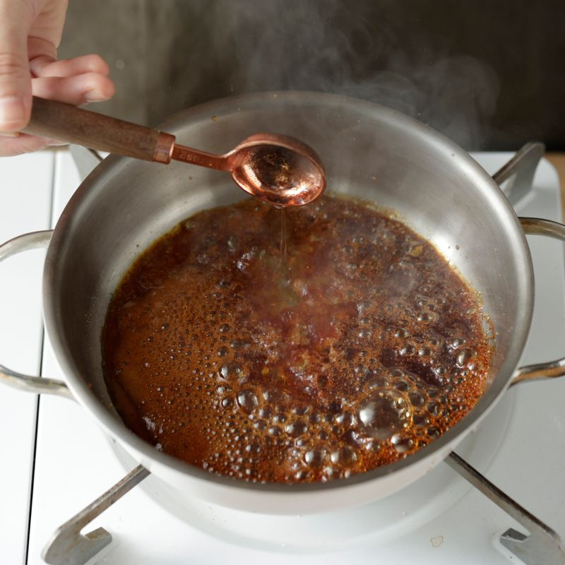
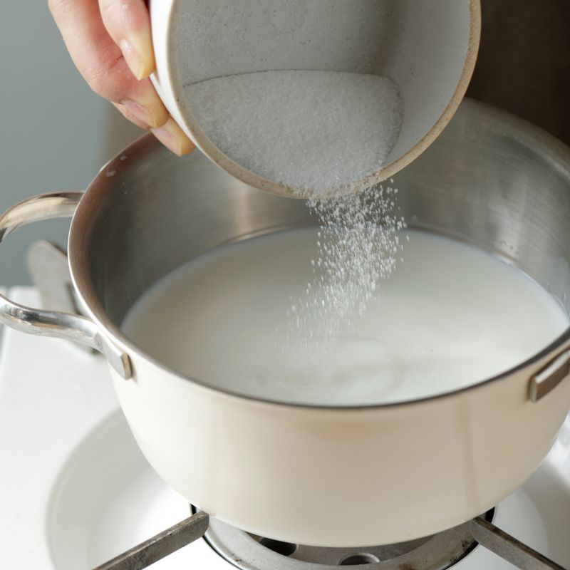
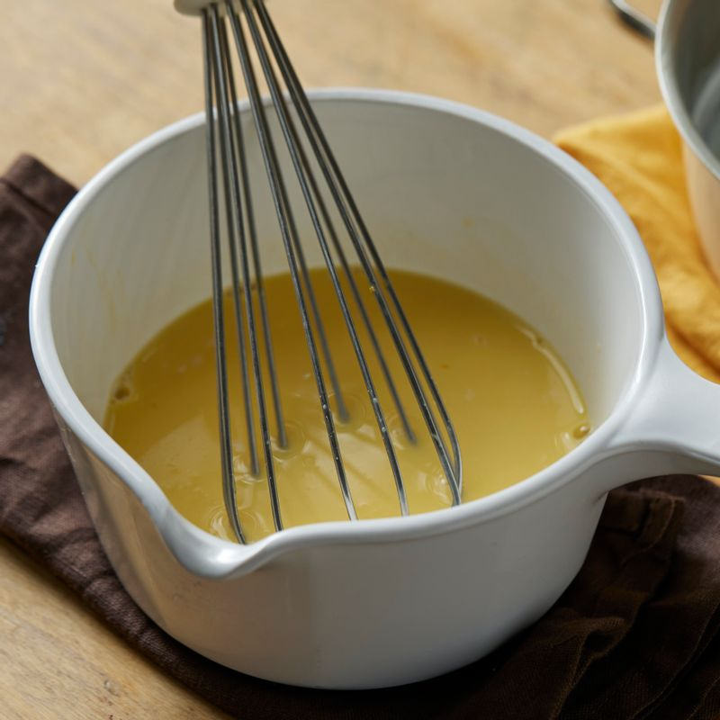
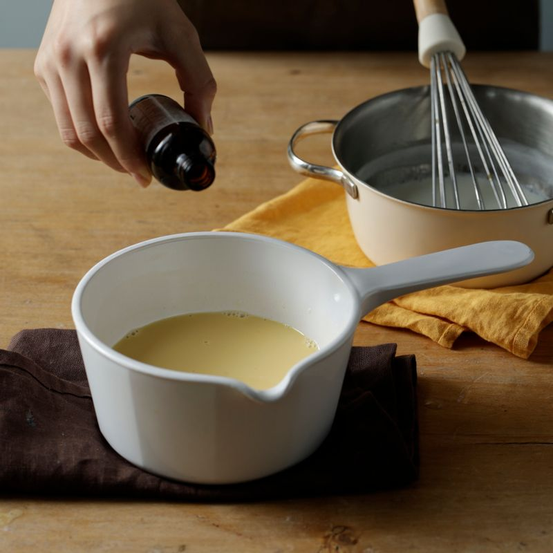
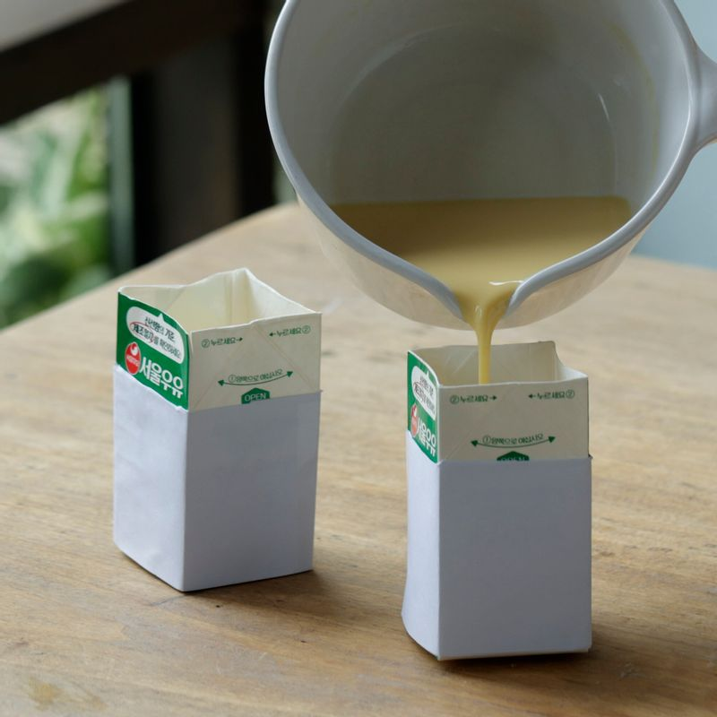
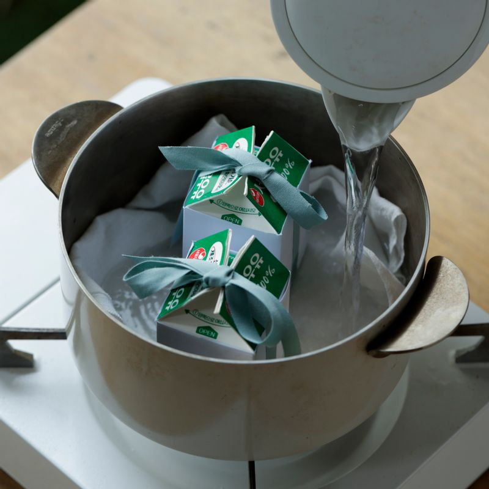
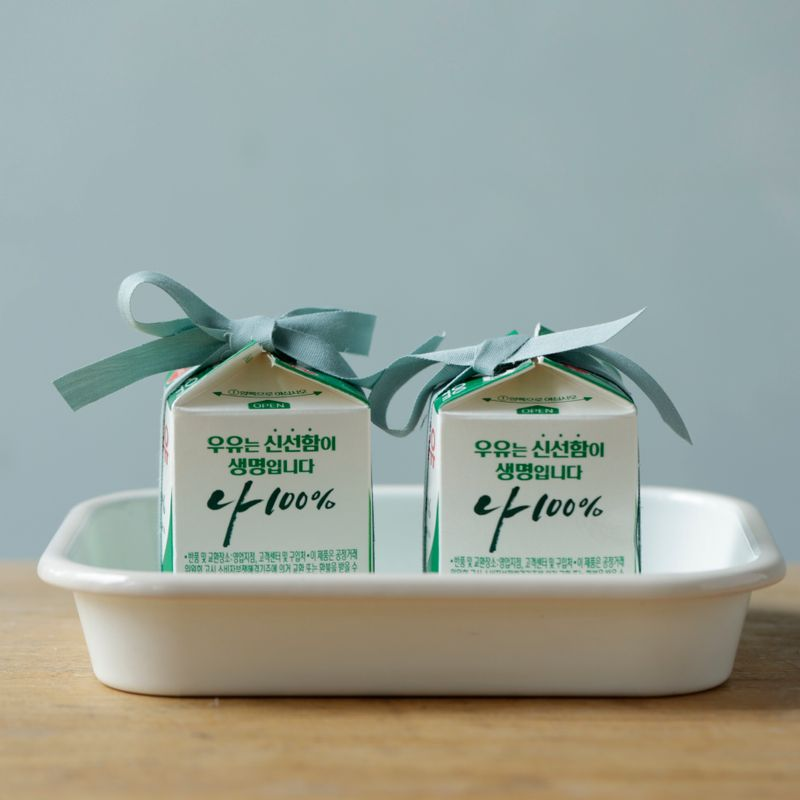
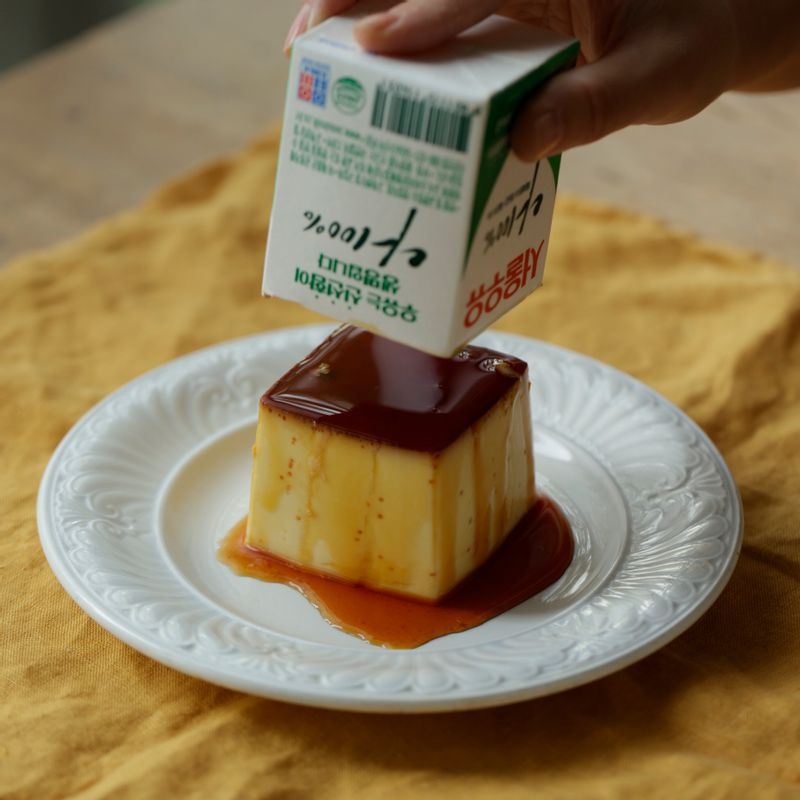

-

작은 팬에 설탕을 넣고 약불에서 달궈주세요. 카라멜처럼 진한 갈색으로 바뀌면서 보글보글 끓으면 저어 섞다가 불을 꺼주세요. 뜨거운 물을 2큰술 넣고 섞어 카라멜시럽을 완성해 주세요. 씻어 놓은 우유팩에 카라멜 시럽을 부어 굳혀주세요.
(tip. 설탕이 녹기 전까지 젓지 말고 그대로 두어 녹여주세요)
-

냄비에 우유와 설탕을 붓고 약불에서 데워주세요.
(tip. 우유는 설탕이 녹을 정도로만 데워주세요)
-

볼에 달걀과 노른자를 넣고 골고루 섞어주세요.
(tip. 거품이 나지 않도록 거품기를 바닥에 넣고 살살 섞어주세요)
-

달걀에 따뜻한 우유를 조금씩 넣어가며 골고루 섞은 후 바닐라 익스트랙을 넣어주세요. 채반에 내려 준비해 주세요.
(tip. 표면에 거품이 있을 경우 랩을 덮어서 거품을 없애주세요)
-

우유팩에 계란물을 부은 후 끈으로 윗부분을 고정해 주세요.
-

냄비에 깨끗한 천을 깔고 우유팩을 올려주세요. 뜨거운 물을 담은 후 뚜껑을 닫고 약불에서 40분간 익혀주세요. 불을 끄고 10분 정도 뜸을 들여주세요.
(tip. 물이 끓지 않고 김이 올라오는 정도로 유지해 주세요)
(tip. 푸딩이 익었는지 확인하기 위해 꼬치로 중간 부분을 찔러봐도 좋아요)
-

완성된 푸딩을 냉장고에 넣어 4~6시간 이상 굳혀주세요.
-

버터 나이프 또는 칼로 푸딩과 우유팩 틈새를 분리시킨 후 접시에 거꾸로 올려주세요. 조심스럽게 우유팩을 제거해 주세요. 완성된 푸딩을 맛있게 즐겨주세요.